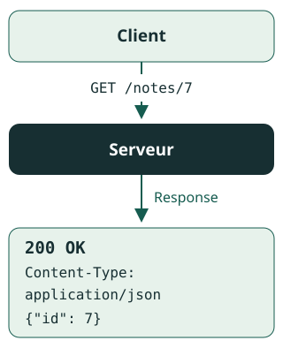
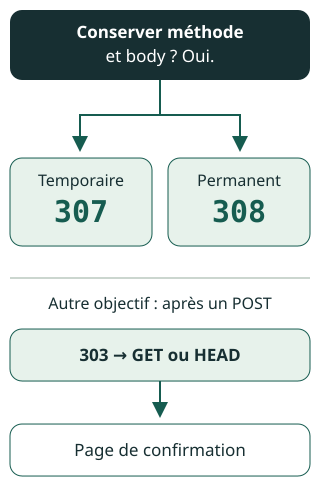

Cours
Introduction · Sections du cours
À la fin de ce cours
- Choisir un status code selon le résultat réel de l'opération.
- Distinguer refus, redirection et réutilisation d'une représentation.
- Associer 401 et 405 aux headers exigés.
- Exprimer ces choix avec
ResponseetRedirectResponse.
Prérequis intégrés : Request, Response, méthode, headers et body. Ils sont expliqués à l'étape 01, sans cours préalable à ouvrir.
01 · Un modèle simple, cinq familles
À comprendre Un client envoie une Request à une URL avec une méthode (GET pour lire, POST pour soumettre). Le serveur renvoie une Response : status code, headers et, quand c'est permis, body.
Au guichet, « demande reçue » ne signifie pas « document prêt ». HTTP distingue aussi l'acceptation d'un travail et son résultat. Le status code décrit le résultat de la Request, pas toute l'histoire métier.
1xx : information intermédiaire ; 2xx : succès ; 3xx : action supplémentaire ; 4xx : erreur liée à la Request ; 5xx : échec du serveur. La famille oriente la lecture sans attribuer automatiquement la faute à une personne. Tous les 3xx ne conduisent pas à une nouvelle URL : 304 et la réutilisation seront étudiés à l'étape 04.
À comprendre Avant de choisir : déterminer ce que la Request demande, ce qui s'est réellement passé et ce que le client doit faire ensuite. Vérifier alors les headers obligatoires et si un body est permis.

Dans HTTP/1.1, le nombre de 200 OK fait autorité ; le libellé est informatif. HTTP/2 et HTTP/3 n'utilisent pas cette phrase descriptive.
À retenir, dans cet ordre : la famille donne un repère, pas une décision complète.
- Lire le status code précis dans son contexte.
- Vérifier ensuite les headers et la présence autorisée d'un body.
02 · 401 ou 403 : quel refus ?
Repère préalable : les éléments d'une Response.
- À comprendre
401Unauthorized - Des identifiants d'authentication valides manquent pour cette ressource. La Response doit contenir au moins un challenge dans le header WWW-Authenticate. Le nom « Unauthorized » ne désigne pas un simple manque de droits.
- Piège à éviter
403Forbidden - Le serveur comprend la Request mais refuse de la satisfaire. Des droits insuffisants pour un utilisateur authentifié en sont un exemple ; 403 ne prouve pas que le client est authentifié. Répéter avec les mêmes identifiants ne résout pas ce refus.
À vérifier Distinction minimale : l'authentication vérifie l'identité ; l'authorization décide ce qui est permis. Dans une application avec form login, l'entrée dans le parcours d'authentication peut produire une redirection vers la connexion, pas toujours 401. On ne déduit donc pas le status code final du seul nom d'une exception ou du firewall.
RFC 9110 §15.5.2 — 401 · §15.5.4 — 403 · Symfony 8.0 — Authentication entry point.
À retenir : un refus HTTP ne suffit pas à reconstituer tout le parcours d'authentication.
- 401 : absence d'identifiants valides et challenge obligatoire.
- 403 : refus, sans preuve d'identité.
- Form login : une redirection peut amorcer l'authentication.
03 · Conserver l'opération ou lire ailleurs ?
À comprendre Pour les redirections suivantes, Location indique la destination. Le premier choix porte sur l'intention, le second sur la durée du déplacement.
307temporaire ·308permanent- Lors du suivi automatique, méthode et body sont conservés : un POST avec un body JSON reste un POST avec ce body. Cette garantie ne promet pas que l'opération cible réussira.
303See Other- Oriente vers une récupération par GET ou HEAD, pas vers la répétition de l'opération initiale. Après POST, le parcours usuel est POST → 303 → GET de la confirmation : actualiser cette page ne rejoue pas le POST.
- Piège à éviter
301permanent ·302temporaire - Pour des raisons historiques, le client peut transformer POST en GET lors du suivi. Ce n'est ni obligatoire, ni une garantie de conservation du body.

RFC 9110 §15.4 — Redirections.
À retenir : choisir selon l'opération à poursuivre, avant de regarder la permanence.
- Conserver méthode et body : 307 ou 308.
- Récupérer ailleurs : 303, par GET ou HEAD.
- 301/302 : ne pas supposer que POST sera conservé.
04 · 204 et 304 : pas de body, pas le même sens
À comprendre 204 No Content : l'opération a réussi, sans body à renvoyer. Des headers restent possibles, mais pas de JSON, même {}.
Piège à éviter 304 Not Modified : pour un GET ou HEAD conditionnel, le client peut réutiliser sa représentation. Par exemple, If-None-Match: "note-v2" correspond à l'ETag actuel : le client garde sa représentation et actualise ses métadonnées avec les headers reçus. 304 n'a pas de body et n'est pas une redirection avec Location. Ce n'est pas non plus un succès de modification. Comparer à 204 et aux déplacements avec Location.
200OK- La Request a réussi. Le body dépend de la méthode : représentation pour GET, résultat du traitement pour POST. HEAD ne renvoie pas de body, même avec 200.
201Created- Une ou plusieurs ressources ont été créées.
Location, s'il est fourni, identifie la ressource principale ; sinon, c'est l'URI cible. Un body peut décrire le résultat. 202Accepted- Le traitement est accepté, mais pas terminé et pas garanti. Un état et une URL de suivi aident le client ; ne pas annoncer un fichier déjà créé pour un export seulement mis en attente.
Exemple concret Pour un export seulement mis en attente, annoncer le travail par 202, avec un état et une URL de suivi dans le body. Si le contrat annonce plutôt la création effective d'une ressource de suivi, 201 peut convenir : ce n'est pas affirmer que le fichier est prêt. Lire ensuite le résultat disponible avec GET appelle 200 et sa représentation JSON, pas 204.
RFC 9110 §15.3 — Succès · §15.4.5 — 304. La politique de cache complète reste planifiée.
À retenir : séparer résultat métier et représentation transportée.
- 204 : succès sans body ; 304 : réutilisation sans body.
- 200 : succès selon la méthode ; 201 : création effective.
- 202 : acceptation, ni achèvement ni garantie.
05 · 406 ou 415 : sortie ou entrée ?
406Not Acceptable- Aucune représentation de sortie ne respecte la négociation du client et le serveur ne souhaite pas proposer de représentation par défaut. Exemple :
Accept: application/xmlface à une API proposant seulement JSON. 415Unsupported Media Type- Le body envoyé utilise un format non pris en charge pour cette méthode et cette ressource. Cela peut concerner le type de média, le codage du contenu ou les données elles-mêmes.
RFC 9110 §15.5.7 — 406 · §15.5.16 — 415.
À retenir : les deux status codes concernent des directions différentes.
- 415 : examiner le body reçu et son format.
- 406 : examiner les préférences de sortie et les représentations disponibles.
06 · Affiner les autres refus
- À comprendre
405Method Not Allowed - La méthode est connue mais non prise en charge par la ressource cible. Le header Allow est obligatoire : il liste les méthodes actuellement permises, par exemple
Allow: GET, HEAD. - À vérifier
400Bad Request - Erreur client perçue empêchant ou faisant refuser le traitement : syntaxe malformée, cadrage invalide, etc. Cette catégorie est large, pas limitée à la syntaxe ou au JSON invalide.
404Not Found- Aucune représentation actuelle trouvée, ou refus de révéler son existence. Ce status code ne garantit pas une disparition permanente.
409Conflict- Conflit avec l'état actuel de la ressource : par exemple, réserver une place déjà attribuée. Décrire le conflit aide le client à le résoudre.
422Unprocessable Content- Le type de contenu est compris et la syntaxe correcte, mais les instructions ne peuvent être traitées : par exemple, une date de fin antérieure à la date de début. 422 n'est pas obligatoire pour toute erreur de validation : 400 peut convenir selon le contrat d'API et le contexte. Symfony ne renvoie pas automatiquement 422 pour toute validation en échec ; le mécanisme utilisé et sa configuration comptent.
RFC 9110 §15.5 — Erreurs client.
À retenir : qualifier la cause plutôt que recycler un status code générique.
- 405 : méthode non permise, avec Allow.
- 400 : catégorie large ; 422 : instructions non traitables malgré un format compris, pas une obligation pour toute validation.
- 404 : non trouvé ou non révélé ; 409 : conflit d'état.
07 · Situer l'échec côté serveur
500Internal Server Error- Une condition inattendue empêche le serveur de satisfaire la Request. Ce n'est pas le status code par défaut d'une erreur de validation du client.
502Bad Gateway- Un intermédiaire (gateway ou proxy) reçoit une Response invalide d'un serveur amont.
503Service Unavailable- Indisponibilité généralement temporaire : surcharge ou maintenance.
Retry-Afterpeut indiquer quand réessayer (date HTTP ou délai en secondes) ; il n'est pas obligatoire. 504Gateway Timeout- Un intermédiaire ne reçoit pas à temps la Response amont nécessaire au traitement. Contrairement à 502, le problème est le délai.
RFC 9110 §15.6 — Erreurs serveur.
À retenir : localiser l'échec avant de choisir son nom.
- 500 : condition inattendue sur le serveur.
- 502/504 : Response amont invalide / trop tardive.
- 503 : indisponibilité, éventuellement accompagnée de Retry-After.
08 · Traduire l'intention avec Symfony 8.0
Prérequis : création et acceptation, préservation ou récupération. Cette étape les traduit en PHP sans les réexpliquer.
Le constructeur de Response reçoit le body, le status code et les headers. Les constantes rendent l'intention lisible, mais HTTP_CREATED (201) ne crée rien à lui seul. JsonResponse encode les données en JSON ; son deuxième argument fixe le status code (notamment HTTP_ACCEPTED pour 202 ou HTTP_OK pour 200), le troisième fixe les headers. Ces classes illustrent des actions de controller indépendantes ; le routing et les opérations métier ne sont pas inclus.
Exemple concret Après création effective d'une note :
use Symfony\Component\HttpFoundation\JsonResponse;
use Symfony\Component\HttpFoundation\Response;
final class CreateNoteController
{
public function __invoke(): JsonResponse
{
// The note has already been created.
return new JsonResponse(
['id' => 7],
Response::HTTP_CREATED,
['Location' => '/notes/7'],
);
}
} Exemple concret RedirectResponse reçoit l'URL cible puis le status code ; il fournit Location. HTTP_TEMPORARY_REDIRECT vaut 307 ; pour le déplacement permanent ci-dessous, HTTP_PERMANENTLY_REDIRECT vaut 308.
use Symfony\Component\HttpFoundation\RedirectResponse;
use Symfony\Component\HttpFoundation\Response;
final class MoveIntakeController
{
public function __invoke(): RedirectResponse
{
return new RedirectResponse(
'/intake-v2',
Response::HTTP_PERMANENTLY_REDIRECT,
);
}
}Pour lire une confirmation ailleurs après POST, employer Response::HTTP_SEE_OTHER (303) avec RedirectResponse. Après une suppression sans document à retourner, new Response('', Response::HTTP_NO_CONTENT) exprime 204.
À vérifier HTTP_UNPROCESSABLE_ENTITY vaut 422, malgré le libellé moderne « Unprocessable Content ». Revoir les conditions de 422 plutôt que déduire la règle du nom historique.
Documentation officielle HttpFoundation 8.0 — Response · RedirectResponse.
À retenir : le code PHP exprime une décision HTTP déjà comprise.
- Effectuer l'opération métier avant d'en annoncer le résultat.
- Utiliser RedirectResponse avec une destination pour une redirection.
- Reconnaître les noms exacts des constantes 308 et 422.
09 · Des raccourcis à éviter
Piège à éviter Un status code inconnu est interprété selon sa famille : par exemple 499 comme 400. Cela n'autorise pas à inventer des status codes applicatifs ; une Response avec un status code inconnu ne doit pas être mise en cache.
À vérifier À l'inverse, « erreur » ne signifie pas « jamais de cache » : 404 fait partie des status codes pouvant bénéficier d'une fraîcheur heuristique, sous réserve des règles et directives applicables. La politique de cache complète est hors de ce pilote.
RFC 9110 §15 — Règles générales.
À retenir : éviter les déductions absolues.
- Status code inconnu : suivre sa famille, sans mettre la Response en cache.
- Erreur reconnue : vérifier les règles applicables au lieu d'interdire tout cache.
- Validation : choisir selon le contrat et le contexte, pas systématiquement 422.
À REPRENDRE DEMAIN, PUIS QUELQUES JOURS PLUS TARD
Fiche express · la démarche
Cette fiche condense la méthode de décision, pas une prédiction des questions d'examen.
À retenir, dans cet ordre :
- Qualifier le résultat : succès, refus ou échec ; une acceptation n'est pas un achèvement.
- Choisir la suite : conserver méthode et body, récupérer ailleurs ou réutiliser une représentation.
- Contrôler les headers indispensables : WWW-Authenticate pour 401, Allow pour 405 ; fournir la destination des redirections.
- Vérifier le body : absent avec HEAD, 204 et 304 ; traduire ensuite avec les constantes Response.
Suite de Module 02 — Fondamentaux HTTP : tous les cours et la pratique du module.
Flashcards
Answer before revealing each card.
Ces cartes ne mesurent pas une maîtrise notée.
For each section, answer the flashcards before expanding them. Then use the French digest to check your reasoning.
Revoir la section du cours
RECALL · ANSWER, THEN EXPAND
Does the status code family alone determine the exact result?
No. The family provides orientation; read the precise status code in context.
Review status code familiesWhich carries the result: the numeric status code or its descriptive phrase?
The numeric status code. The descriptive phrase does not determine the semantics.
Review the numeric codeRevoir la section du cours
RECALL · ANSWER, THEN EXPAND
Which header must a 401 Response include?
WWW-Authenticate, with at least one authentication challenge.
Review 401 and its challengeDoes 403 prove that the client has authenticated?
No. It means the server understood the Request but refuses to fulfil it; authentication is not guaranteed.
Review the 403 trapMust a form-login application return 401 to every unauthenticated client?
No. Its authentication entry point may redirect the client to the login page.
Review form loginRevoir la section du cours
Look away from the lesson. Recall steps 01 and 02 before continuing; then open each correction.
Which matters: the numeric status code or its phrase?
Le nombre fait autorité. Review the numeric code.
Revoir la section du cours
Name the required 401 header. Does 403 prove authentication?
WWW-Authenticate ; non pour 403. Review the 401 / 403 distinction.
Revoir la section du cours
RECALL · ANSWER, THEN EXPAND
Which pair preserves both method and body when automatically followed?
307 for a temporary move and 308 for a permanent move. Neither guarantees success at the destination.
Review preservationWhat kind of follow-up does 303 direct the client to perform?
A retrieval using GET or HEAD, rather than a replay of the original operation.
Review retrievalDoes 302 guarantee that a POST remains a POST?
No. A client may change POST to GET when following 302; use 307 when preservation is required for a temporary move.
Review the 302 trapRevoir la section du cours
RECALL · ANSWER, THEN EXPAND
Can either 204 or 304 contain an empty JSON object as a body?
No. Both exclude a body. 204 reports success without content; 304 permits reuse after a conditional GET or HEAD, not navigation.
Review 204 · Review 304Does 202 promise that an accepted export will succeed?
No. Processing is incomplete and may fail later. A monitoring URL can help the client track it.
Review acceptanceHow do 201 and a successful HEAD with 200 differ?
201 reports resource creation and may include a body. HEAD with 200 reports success but never includes a body.
Review creation and HEADRevoir la section du cours
Recall the earlier distinctions before the second half. Answer from memory, then follow only the references you need.
Does 403 prove authentication? Which temporary redirect preserves POST and its body?
Non ; 307. Review step 02 · Review step 03.
Revoir la section du cours
Does 304 navigate to Location? Can 204 carry an empty JSON object?
Non dans les deux cas. Review 304 reuse · Review 204 and its body rule.
Revoir la section du cours
RECALL · ANSWER, THEN EXPAND
A JSON-only endpoint rejects an XML Request body. Which status fits?
415: the incoming format is unsupported for this method and resource.
Review incoming formatsNo available output matches Accept, and the server declines a default representation. Which status fits?
406: the problem is output negotiation, not the format of the incoming body.
Review output negotiationRevoir la section du cours
RECALL · ANSWER, THEN EXPAND
Which header must accompany 405?
Allow, listing the methods currently supported by the target resource.
Review AllowIs 400 restricted to syntax errors?
No. It covers perceived client errors more broadly. 422 specifically assumes understood content type and valid syntax but unprocessable instructions.
Review 400 · Review 422How do 404 and 409 differ?
404 means no current representation was found or its existence is not disclosed. 409 means the operation conflicts with the resource's current state.
Review 404 · Review 409Revoir la section du cours
RECALL · ANSWER, THEN EXPAND
How do 502 and 504 distinguish upstream failures?
502 means an invalid upstream Response; 504 means no timely upstream Response.
Review upstream failuresIs Retry-After mandatory with 503?
No. It may indicate when to retry, as an HTTP date or a delay in seconds.
Review Retry-AfterRevoir la section du cours
RECALL · ANSWER, THEN EXPAND
Which Response constant represents 308, and which class supplies Location?
Response::HTTP_PERMANENTLY_REDIRECT represents 308. RedirectResponse supplies the Location header from its target URL.
Review RedirectResponseWhat does Response::HTTP_UNPROCESSABLE_ENTITY represent?
422, whose modern HTTP name is Unprocessable Content.
Review the 422 constantDoes returning HTTP_CREATED create a resource?
No. The application must create it first; the Response reports the result.
Review Response constructionRevoir la section du cours
RECALL · ANSWER, THEN EXPAND
How should a client treat an unrecognized 499 status code?
As a 400-class error. A Response with an unrecognized status code must not be cached.
Review unknown status codesDoes 404 categorically prohibit caching?
No. It can be heuristically cacheable, subject to the applicable cache rules and directives.
Review the cache nuanceMust every validation failure return 422, including in Symfony?
No. 422 fits understood content with valid syntax but unprocessable instructions; 400 can also be appropriate depending on the API contract and context. Symfony does not automatically return 422 for every validation failure: the mechanism and configuration matter.
Review the validation status choiceRevoir la section du cours
RECALL · ANSWER, THEN EXPAND
Before choosing a status code, which three things should you establish?
What the Request asks for, what actually happened, and what the client should do next. Then check required headers and whether a body is allowed.
Review the decision processQuiz
Quiz interactif non chargé. Démarrez après chargement de la banque locale.
Sans JavaScript ou si le chargement échoue : aucune tentative notée. Les flashcards du cours restent disponibles.
What do the five HTTP status code families indicate?
Correction de consultation — non notée.
Le premier chiffre identifie la class de statut. La famille oriente la lecture sans déterminer à elle seule le résultat précis.
- Distractor: Information, success, request error, further action, server failure.
3xx oriente vers une action supplémentaire ; 4xx désigne une erreur liée à la Request.
- Distractor: Information, further action, success, request error, server failure.
2xx est la famille succès ; 3xx ne l'est pas.
- Correct: Information, success, further action, request error, server failure.
Le premier chiffre identifie la class de statut. La famille oriente la lecture sans déterminer à elle seule le résultat précis.